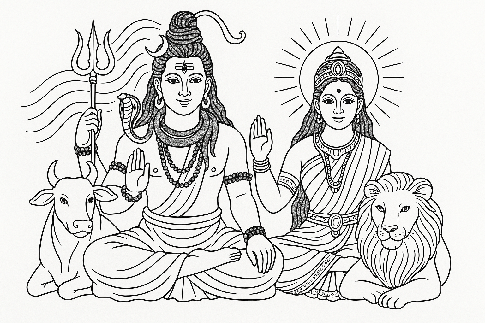
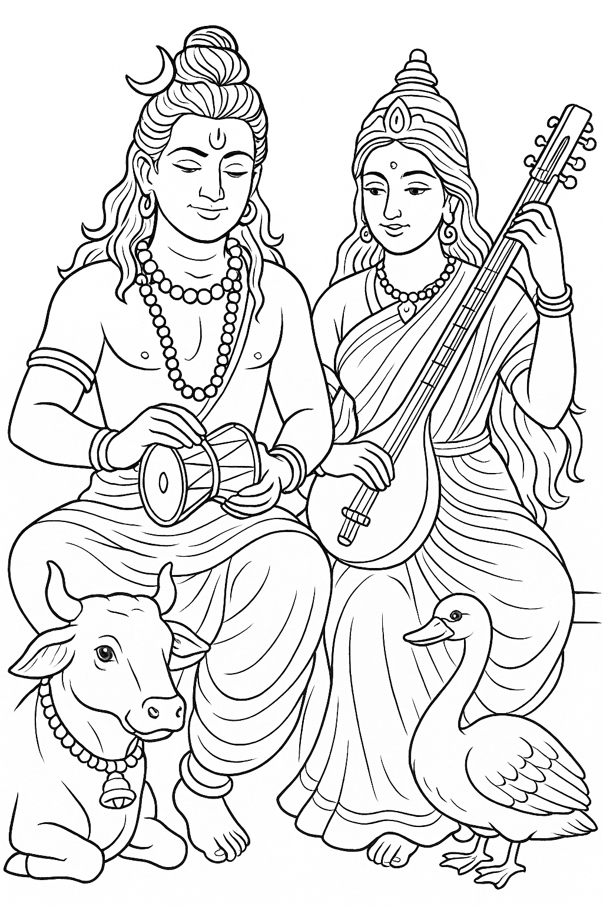
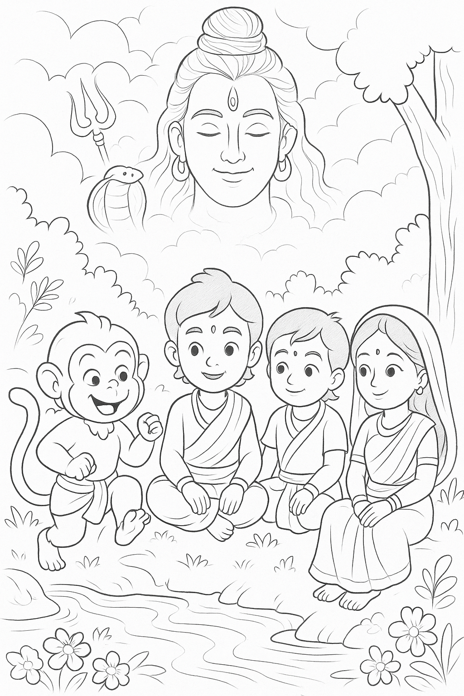
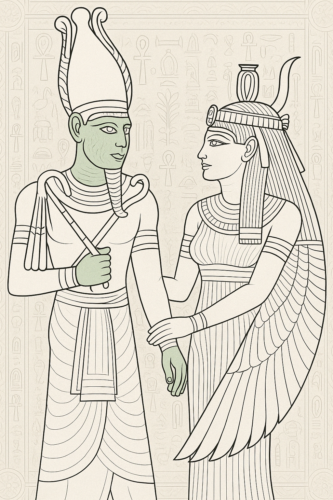
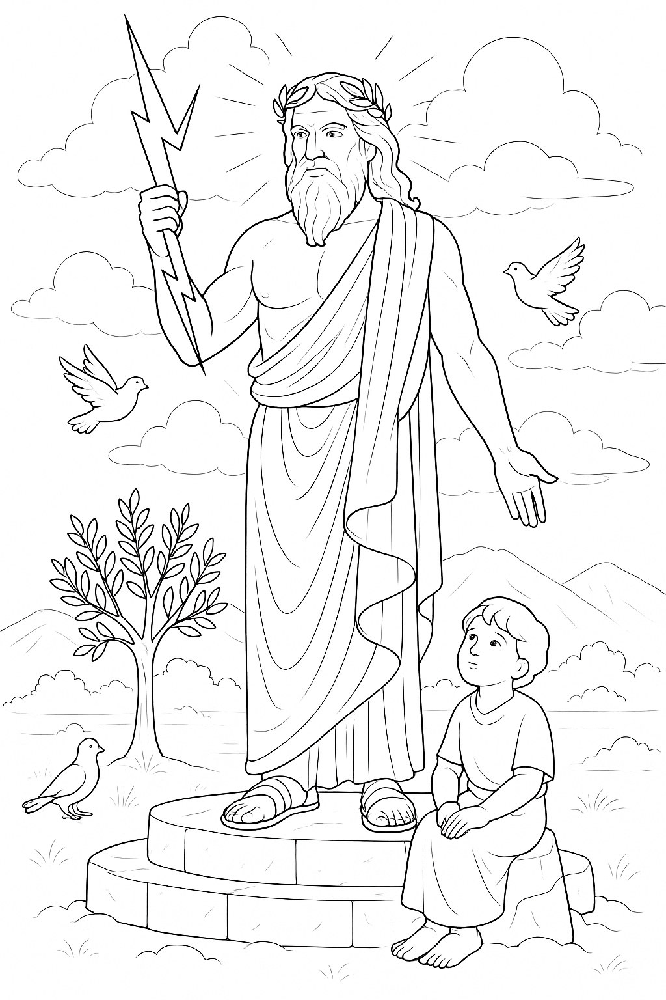
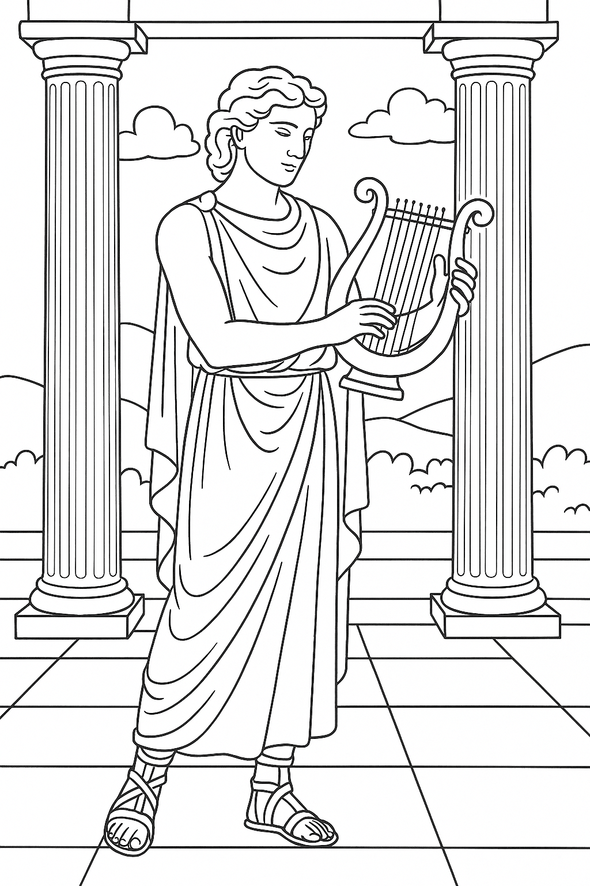
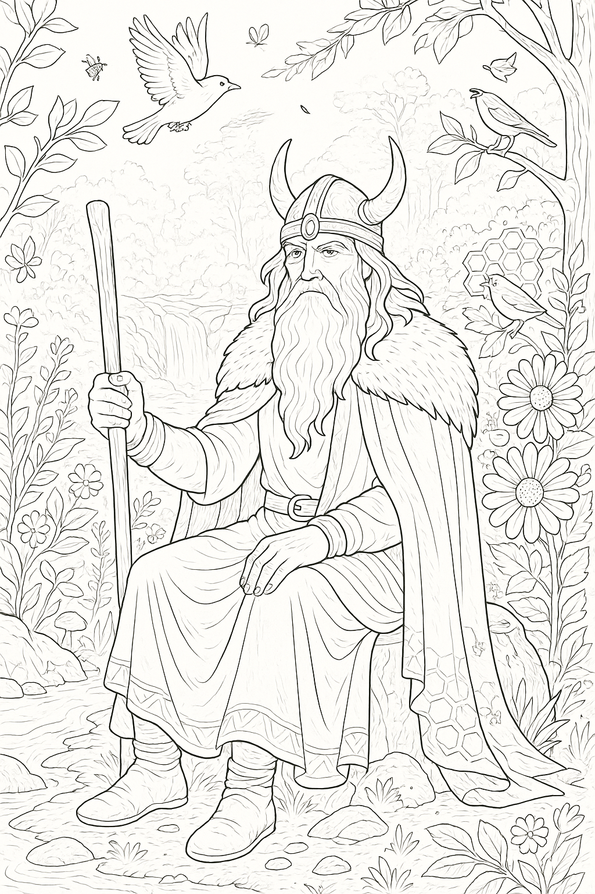
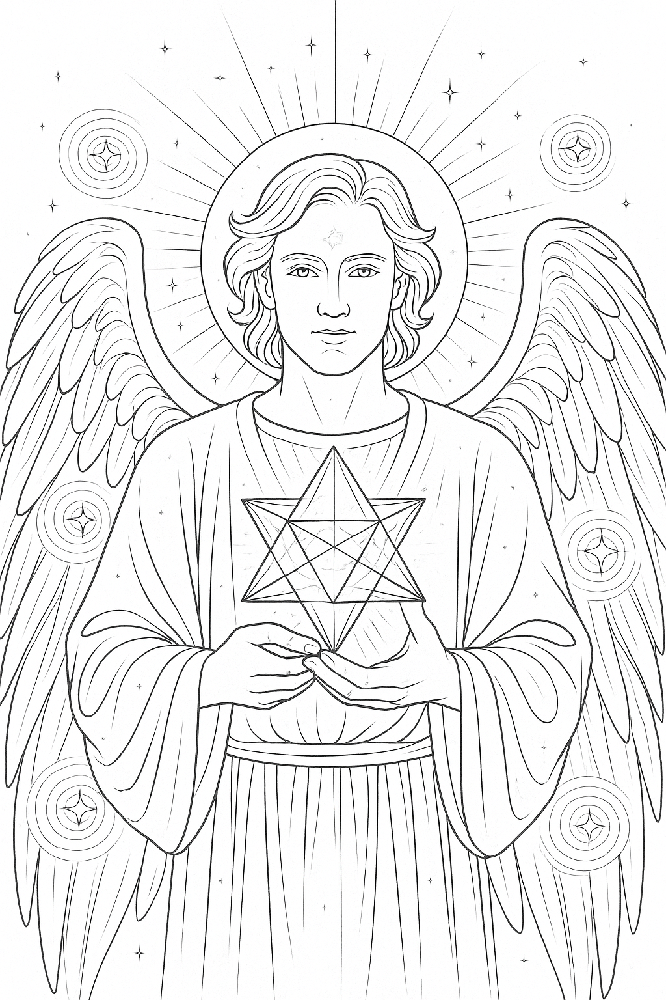
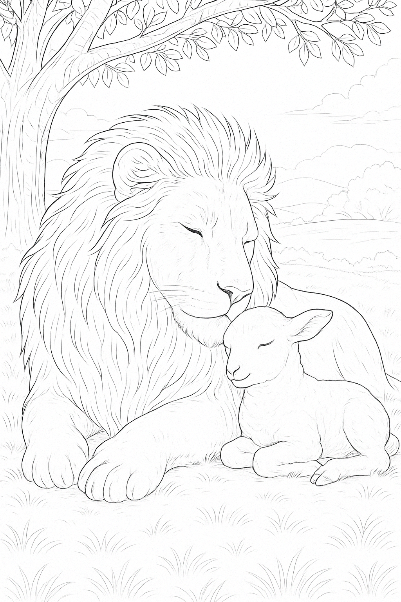

Shiva & Parvati
Shiva met zijn trouwe stier Nandi, naast zijn geliefde Parvati en haar Leeuwin - een beeld van kracht en zachtheid in verbondenheid
Shiva en Saraswati in Muziek
Saraswati, Godin van muziek en kunst maakt samen met haar broer Shiva muziek - hier los van rollen, vrij in hun expressie.
Divine Childhood
Een zeldzaam beeld van jonge Ram, Sita en Lakshman spelend met Hanuman. Lord Shiva kijkt liefdevol toe van boven als beschermer.
Osiris & Isis
De Egyptische Goden Orisis en Isis. Man en vrouw. Osiris is groen afgebeeld, omdat hij keer op keer in hetzelfde lichaam herboren werd.
Zeus & Asklepios als kind
Zeus, hoeder van balans onder de oude Griekse goden, met zijn kleinzoon Asklepios - de jonge genezer, luisterend naar de stem van wijsheid.
Apollo met Lyra
De Griekse God Apollo, zoon van Zeus en vader van Asklepios. Hier speelt hij op zijn heilige lyra - een ode aan licht, kunst en harmonie.
Wodan (Odin)
Wodan, ook wel Odin genoemd, een ziener en magiër onder de Germaanse goden - verbonden met natuur, wijsheid en magie.
Aartsengel Metatron
Aartsengel Metatron - lichtmeester van geometrie en transformatie. Ooit mens, nu wachter tussen hemel en vorm.
De Leeuw en het Lam
Een oud visioen van vrede: de leeuw en het lam leven in harmonie - kracht en zachtheid verenigd. En het zal opnieuw zo zijn.